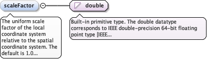

The spatial location of the origin (0,0,0) of this local CRS, in arecognized spatial coordinate reference system. It anchors thetransformation from local to spatial coordinates.
<element name="originLocation" type="diggs:PointLocationPropertyType"><annotation><documentation>The spatial location of the origin (0,0,0) of this local CRS, in a recognized spatial coordinate reference system. It anchors the transformation from local to spatial coordinates.</documentation></annotation></element>
The spatial extent and direction of one axis of the Cartesiancoordinate system. Give one for each axis, in the axis order of theCartesian coordinate system.
<element name="axisLocation" type="diggs:AxisLocationPropertyType" minOccurs="1" maxOccurs="unbounded"><annotation><documentation>The spatial extent and direction of one axis of the Cartesian coordinate system. Give one for each axis, in the axis order of the Cartesian coordinate system.</documentation></annotation></element>
The mathematical method used to transform between this local CRS andspatial coordinates, for example affine, helmert,direct-linear-referencing or polynomial. No DIGGS-authoreddictionary currently exists for this element.
<element name="transformationMethod" type="gml:CodeType" minOccurs="0"><annotation><documentation>The mathematical method used to transform between this local CRS and spatial coordinates, for example affine, helmert, direct-linear-referencing or polynomial. No DIGGS-authored dictionary currently exists for this element.</documentation></annotation></element>
The angle that orients the local axes relative to the spatialcoordinate system. Give one angle for a 2D system (rotation aboutthe vertical axis) and up to three for a 3D system (for exampleEuler angles, or rotations about the X, Y and Z axes);transformationMethod determines how multiple angles are interpreted.Repeat for each angle.
<element name="rotationAngle" type="diggs:PlaneAngleMeasureType" minOccurs="0" maxOccurs="3"><annotation><documentation>The angle that orients the local axes relative to the spatial coordinate system. Give one angle for a 2D system (rotation about the vertical axis) and up to three for a 3D system (for example Euler angles, or rotations about the X, Y and Z axes); transformationMethod determines how multiple angles are interpreted. Repeat for each angle.</documentation></annotation></element>
The uniform scale factor of the local coordinate system relative tothe spatial coordinate system. The default is 1.0 (no scaling). Avalue above 1.0 means local coordinates represent larger distancesthan the corresponding spatial coordinates, and a value below 1.0smaller distances.
Diagram

Type
double
Properties
content
simple
minOccurs
0
default
1.0
Source
<element name="scaleFactor" type="double" minOccurs="0" default="1.0"><annotation><documentation>The uniform scale factor of the local coordinate system relative to the spatial coordinate system. The default is 1.0 (no scaling). A value above 1.0 means local coordinates represent larger distances than the corresponding spatial coordinates, and a value below 1.0 smaller distances.</documentation></annotation></element>
<element name="transformationAccuracy" type="diggs:LengthMeasureType" minOccurs="0"><annotation><documentation>The expected positional error, as a distance, when transforming coordinates between this local CRS and spatial coordinates.</documentation></annotation></element>
Database handle for the object. It is of XML type ID, so is constrained to beunique in the XML document within which it occurs. An external identifier for the object inthe form of a URI may be constructed using standard XML and XPointer methods. This is doneby concatenating the URI for the document, a fragment separator, and the value of the idattribute.
Source
<complexType name="LocalCartesianCRSType"><complexContent><extension base="gml:AbstractCRSType"><sequence><element ref="gml:cartesianCS"><annotation><documentation>The Cartesian coordinate system that defines the axes of this CRS. It must be a Cartesian coordinate system, not a spherical, cylindrical or other type.</documentation></annotation></element><element ref="gml:engineeringDatum"><annotation><documentation>The engineering datum that defines the anchor point and realization of this local coordinate reference system.</documentation></annotation></element><element name="originLocation" type="diggs:PointLocationPropertyType"><annotation><documentation>The spatial location of the origin (0,0,0) of this local CRS, in a recognized spatial coordinate reference system. It anchors the transformation from local to spatial coordinates.</documentation></annotation></element><element name="axisLocation" type="diggs:AxisLocationPropertyType" minOccurs="1" maxOccurs="unbounded"><annotation><documentation>The spatial extent and direction of one axis of the Cartesian coordinate system. Give one for each axis, in the axis order of the Cartesian coordinate system.</documentation></annotation></element><element name="transformationMethod" type="gml:CodeType" minOccurs="0"><annotation><documentation>The mathematical method used to transform between this local CRS and spatial coordinates, for example affine, helmert, direct-linear-referencing or polynomial. No DIGGS-authored dictionary currently exists for this element.</documentation></annotation></element><element name="rotationAngle" type="diggs:PlaneAngleMeasureType" minOccurs="0" maxOccurs="3"><annotation><documentation>The angle that orients the local axes relative to the spatial coordinate system. Give one angle for a 2D system (rotation about the vertical axis) and up to three for a 3D system (for example Euler angles, or rotations about the X, Y and Z axes); transformationMethod determines how multiple angles are interpreted. Repeat for each angle.</documentation></annotation></element><element name="scaleFactor" type="double" minOccurs="0" default="1.0"><annotation><documentation>The uniform scale factor of the local coordinate system relative to the spatial coordinate system. The default is 1.0 (no scaling). A value above 1.0 means local coordinates represent larger distances than the corresponding spatial coordinates, and a value below 1.0 smaller distances.</documentation></annotation></element><element name="transformationAccuracy" type="diggs:LengthMeasureType" minOccurs="0"><annotation><documentation>The expected positional error, as a distance, when transforming coordinates between this local CRS and spatial coordinates.</documentation></annotation></element></sequence></extension></complexContent></complexType>